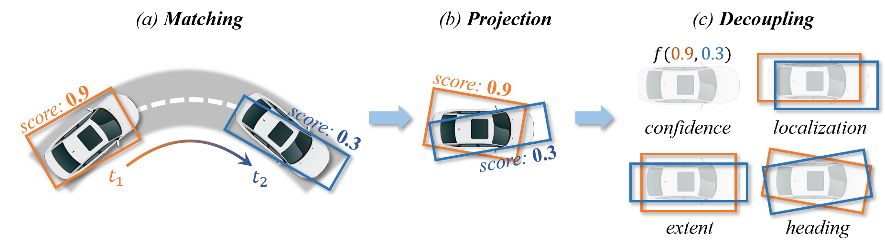
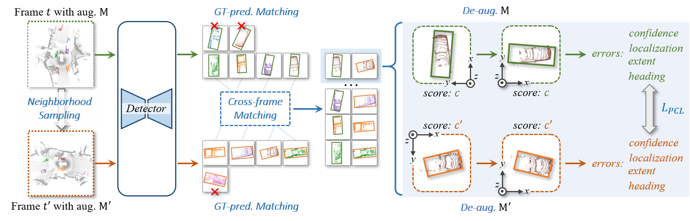

🚀 3D Detection Stability Evaluation and Improvment
Principles in Stability Metric Design
Through the detailed analysis of stability and exploration of potential solutions, we identify four key properties that an effective metric should meet:
- Comprehensiveness: The metric should comprehensively reflect influences from all relevant detection elements.
- Homogeneity: Influences caused by all elements should be well-processed into unified physical units.
- Symmetry: The metric values should be consistent when applied to both forward and reverse inputs.
- Marginal Unimodality: For each element with others fixed, the metric should be unimodal w.r.t. its stability.
Stability Index
While the IoU is a promising starting point, meeting the four properties de mands careful designs to effectively integrate the confidence score and address the asymmetry and non-unimodality design flows.
To this end, we introduce schemes of projection with pivot boxes, element decoupling, and stability aggregation, as illustrated in the below figure.
Ultimately, we assess the stability of object pairs in consecutive frames and denote the metric as Stability Index (SI).

In the picture, the orange and blue boxes represent the best matches between the predictions and the ground-truths searched by the Hungarian algorithm.
These boxes are subsequently associated across frames using their object ID labels.
After projecting predictions into a pre-built pivot box, SI decouples them into element-wise computations, which are then aggregated for the final assessment of detection stability.
For the details of the procedure of computing SI, please refer to our paper.
Prediction Consistency Learning
Beyond the design of the metric, we further attempt to boost the detection stability of 3D object detectors.
For this purpose, we introduce a general and effective training strategy named Consistency Learning (PCL), as illustrated in the below figure.
Our PCL is built on the core idea of encouraging prediction consistency across frames under various augmentations and timestamps.
It consists of four key stages: neighborhood sampling, prediction pairing, de-augmentation, and prediction consistency loss.

In each iteration, PCL samples a pair of frames at neighboring timestamps t and t', and applies augmentations M and M' to the paired samples.
GT-prediction matching and cross-frame matching then collaboratively associate the detector's predictions from the same objects between the two frames.
After the de-augmentation procedure, PCL calculates the prediction errors in terms of confidence, localization, extent, and heading, which are defined in the object self-coordinate system.
Finally, PCL penalizes the error disparities among all prediction pairs to enforce the temporal consistency.
In the figure, pred. and aug. represent prediction and augmentation, respectively.